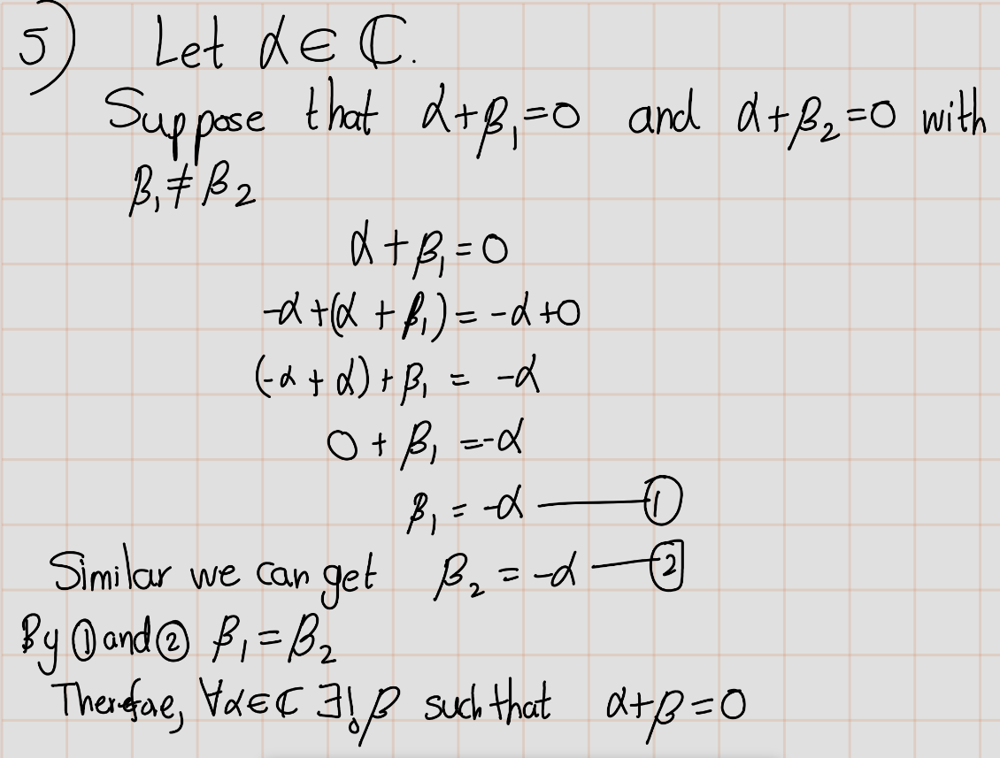
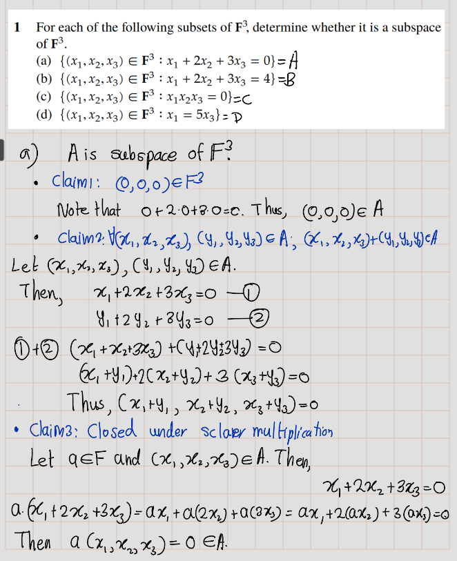
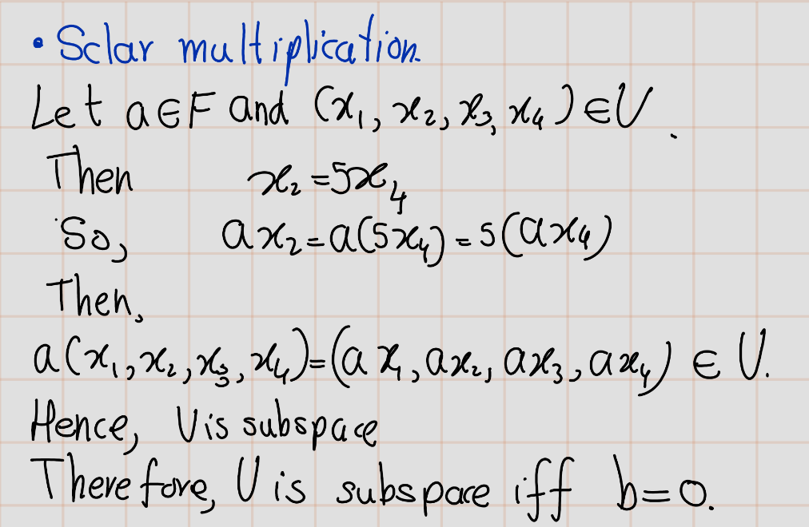

Chapter 2 Exercise
2.1 Exercise 1A
- Show that \(\alpha + \beta = \beta + \alpha\) for all \(\alpha, \beta \in \mathbb{C}\).

- Show that \((\alpha + \beta) + \lambda = \alpha + (\beta + \lambda)\) for all \(\alpha, \beta, \lambda \in \mathbb{C}\).

Show that \((\alpha \beta)\lambda = \alpha(\beta \lambda)\) for all \(\alpha, \beta, \lambda \in \mathbb{C}\).
Show that \(\lambda(\alpha + \beta) = \lambda\alpha + \lambda\beta\) for all \(\lambda, \alpha, \beta \in \mathbb{C}\).
- Show that for every \(\alpha \in \mathbb{C}\), there exists a unique \(\beta \in \mathbb{C}\) such that \(\alpha + \beta = 0\).

- Show that for every \(\alpha \in \mathbb{C}\) with \(\alpha \neq 0\), there exists a unique \(\beta \in \mathbb{C}\) such that \(\alpha\beta = 1\).

- Show that \(\frac{-1 + \sqrt{3}i}{2}\) is a cube root of 1 (meaning that its cube equals 1).

- Find two distinct square roots of \(i\).
- Find \(x \in \mathbb{R}^4\) such that \((4, -3, 1, 7) + 2x = (5, 9, -6, 8)\).
- Explain why there does not exist \(\lambda \in \mathbb{C}\) such that \(\lambda(2 - 3i, 5 + 4i, -6 + 7i) = (12 - 5i, 7 + 22i, -32 - 9i)\).

Show that \((x + y) + z = x + (y + z)\) for all \(x, y, z \in \mathbb{F}_n\).
Show that \((ab)x = a(bx)\) for all \(x \in \mathbb{F}_n\) and all \(a, b \in \mathbb{F}\).
Show that \(1x = x\) for all \(x \in \mathbb{F}_n\).
Show that \(\lambda(x + y) = \lambda x + \lambda y\) for all \(\lambda \in \mathbb{F}\) and all \(x, y \in \mathbb{F}_n\).
Show that \((a + b)x = ax + bx\) for all \(a, b \in \mathbb{F}\) and all \(x \in \mathbb{F}_n\).
2.2 Exercise 1B
Prove that \(−(−v) = v\) for every \(v\in V\). Solution: Let \(v\in V\). Then there exist a unique additive inverse of \(v\). We denote it by \(-v\). Thus, \\[v+(-v)=0.\\\] Then by definition, additive inverse of \((-v)\) is v. We denote it by \(-(-v)=v\).
Suppose \(a \in \mathbb{F} ,v\in V\), and \(v= 0\). Prove that \(a=0\) or \(v=0\).


Suppose \(S\) is a non-empty set. Let \(V^S\) denote the set of functions from \(S\) to \(V\). Define a natural addition and scalar multiplication on \(V^S\), and show that \(V^S\) is a vector space with these definitions.


2.3 Exercise 1C


Statement 1: If \(b\in \mathbb{F}\), then \\[\\left\\{(x\_1,x\_2,x\_3,x\_4)\\in \\mathbb{F}^4:x\_3=5x\_4+b\\right\\}\\\] is a subspace of \(\mathbb{F}^4\) if and only if \(b = 0\).
Proof of Statement 1

Statement 2 : The set of continuous real-valued functions on the interval \(\[0, 1\]\) is a subspace of \(\mathbb{R}^\[0,1\]\)
Proof of statement 2:


Statement 3 : The set of differentiable real-valued functions on \(\mathbb{R}\) is a subspace of \(\mathbb{R}^{\mathbb{R}}\).
Proof of Statement 3
Statement 4 : The set of differentiable real-valued functions \(\mathbb{R}\) on the interval (0, 3) such that \(f’(2)=b\) is a subspace of \(\mathbb{R}^{(0,3)}\) if and only if \(b = 0\).
Proof of Statement 4
Statement 5 : The set of all sequences of complex numbers with limit \(0\) is a subspace of \(\mathbb{C}^{\infty}\)
Proof of Statement 5: